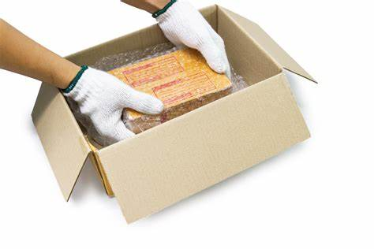
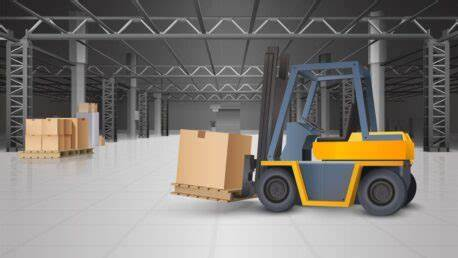
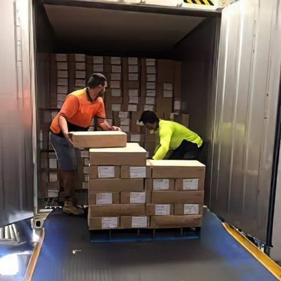

WE OFFER THE FOLLOWING SERVICES
Full-Service Packing Description: Our Full-Service Packing option takes
the burden off your shoulders entirely. Our trained professionals will
carefully pack all your belongings and Goods using high-quality
materials to ensure protection against damage during transit. This
includes wrapping fragile items in bubble wrap, using boxes specifically
designed for delicate items, and securing furniture with protective
covers. Benefits: Saves time and reduces stress, ensures items are
packed securely, and provides peace of mind knowing experts handle the
packing.

Packing Supplies Provision Description: For those who prefer to pack
themselves but need the right tools, we offer a wide range of packing
supplies. This includes sturdy boxes of various sizes, bubble wrap,
packing peanuts, tape, markers, and more. Our selection caters to both
fragile and non-fragile items, ensuring you have everything needed for a
secure move. Benefits: Allows customers to pack at their own pace,
offers flexibility, and ensures they have access to quality packing
materials.
Professional Loading and Unloading Description: Our team handles the
heavy lifting with our Professional Loading and Unloading service. We
carefully load your packed items onto our vehicles, ensuring they're
secured properly to prevent movement during transport. Upon arrival at
your destination, we unload your belongings and Goods with the same
level of care, placing them exactly where you specify. Benefits: Reduces
risk of injury, ensures items are handled correctly, and saves time and
energy.

Transportation Services Description: Our fleet of well-maintained,
Ships, Panes and vehicles is equipped to handle moves of all sizes, from
small Sized goods to large Sized Goods. We offer both local and
International long-distance transportation options, ensuring your
belongings arrive safely and on time. Our vehicles are
climate-controlled to protect sensitive items and come with GPS tracking
for transparency. Benefits: Ensures safe and timely delivery, protects
items from weather conditions, and provides real-time tracking for peace
of mind.

Unpacking Assistance Description: After the move, let us take care of
the unpacking so you can settle into your new home quickly. Our team
will unpack your boxes, arrange your items according to your
preferences, and dispose of any packing materials. This service is
perfect for those who want to start enjoying their new space
immediately. Benefits: Saves time and effort, ensures items are placed
exactly where you want them, and removes the hassle of dealing with
leftover packing materials.
Customized Moving Plans Description: Recognizing that every move is
unique, we offer customized moving plans tailored to your specific
needs. Whether you require additional storage solutions, special
handling for valuable items, or a timeline that fits your schedule, our
team works closely with you to create a plan that meets your
requirements perfectly. Benefits: Provides a tailored moving experience,
accommodates special requests, and ensures your move goes smoothly
according to your preferences.